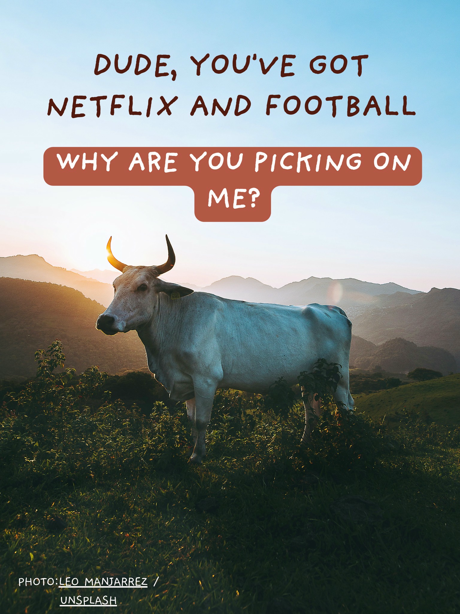

Deixem os touros em paz.
Estamos em 2026. Porque é que ainda fazemos sofrer animais para divertir pessoas? Eu não consigo compreender. E quando soube da proposta para obrigar a RTP a transmitir touradas, decidi não ficar só pela indignação.
Escrevi a várias entidades, assinei uma petição e tentei apoiar uma proposta contra os apoios públicos às touradas. Deixo aqui os passos, para quem quiser fazer ouvir a sua própria voz.
Leave the bulls alone.
It's 2026. Why are we still making animals suffer for people's entertainment? I don't understand it. When I heard about a plan to make public television show bullfighting, I decided not to stop at feeling angry.
I wrote to several institutions, signed a petition and tried to support a proposal to end public backing for bullfighting. Here are the steps, in case you want to make your own voice heard.


Ó pá, tens Netflix e futebol.
Porque é que te metes comigo?
O que fiz — e como pode fazer o mesmo
Toque num dos passos para ver o que fiz, onde escrever e como enviar uma mensagem.
What I did — and how you can do it too
Tap any step to see what I did, where to go and what to write.
01Assinei uma petiçãoI signed a petition
Assinei uma petição para dizer que a RTP não devia ser obrigada a mostrar touradas.
Como fazer: abra a petição, leia o pedido, carregue em Assinar Petição e preencha os dados. Depois, confirme a assinatura no email que receber.
I signed a petition because I don't think RTP should be forced to show bullfighting.
What to do: open the petition, read it, tap Assinar Petição and fill in your details. Then confirm your signature using the email link.
02Escrevi ao ParlamentoI wrote to Parliament
Escrevi aos deputados porque são eles que discutem e votam as leis. Queria que soubessem que há pessoas contra esta ideia.
Como fazer: abra a página do Parlamento e envie uma mensagem sua. Pode copiar o exemplo abaixo e alterá-lo.
I wrote to MPs because they are the people who debate and vote on laws. I wanted them to hear that people disagree with this idea.
What to do: open Parliament's message page and send your opinion. You can copy and change the example below.
Assunto: Touradas na RTP Exmos. Senhores Deputados, Não concordo que a RTP seja obrigada a transmitir touradas. Os animais não deviam sofrer para divertir pessoas, muito menos na televisão pública. Peço-vos que reconsiderem esta medida e deixem a RTP decidir livremente a sua programação. Com os melhores cumprimentos, [O seu nome]
Pode mudar o texto para dizer o que pensa.
Change the words to reflect what you think. The letter is in Portuguese for the recipient.
03Escrevi à ERC, que acompanha a televisãoI wrote to ERC, which oversees TV
A ERC é a entidade que acompanha as televisões e outros meios de comunicação em Portugal. Perguntei-lhes uma coisa simples: não devia ser a própria RTP a escolher os programas que transmite?
Como fazer: pode escrever para info@erc.pt ou usar o site da ERC. Deixo abaixo a mensagem que pode adaptar.
ERC is the organisation that oversees TV and other media in Portugal. I asked a simple question: shouldn't RTP decide for itself what programmes to show?
What to do: email info@erc.pt or use the ERC website. There's a short message below that you can change.
Assunto: Touradas na RTP Bom dia, Gostaria de saber se o Parlamento pode obrigar a RTP a transmitir touradas. Não deveria ser a própria televisão pública a decidir a sua programação? Agradeço que me esclareçam esta questão. Com os melhores cumprimentos, [O seu nome]
Pode mudar o texto para dizer o que pensa.
Change the words to reflect what you think. The letter is in Portuguese for the recipient.
04Escrevi ao PresidenteI wrote to the President
Também quis que o Presidente soubesse da minha preocupação. Recebi um email automático a dizer que a mensagem chegou. Ainda não recebi uma resposta pessoal.
Como fazer: abra o formulário da Presidência, escreva a sua mensagem e envie. Pode usar o exemplo abaixo.
I also wanted the President to hear my concerns. I got an automatic email saying my message arrived. I haven't received a personal reply.
What to do: open the President's contact form, write your message and send it. You can use the example below.
Assunto: Touradas na RTP Exmo. Senhor Presidente da República, Escrevo porque estou preocupada com a proposta de obrigar a RTP a transmitir touradas. Não consigo compreender porque é que, nos dias de hoje, continuamos a usar o sofrimento dos animais como entretenimento. Peço-lhe também que tenha em atenção a liberdade da RTP para decidir a sua programação, caso esta medida chegue à sua apreciação. Com os melhores cumprimentos, [O seu nome]
Pode mudar o texto para dizer o que pensa.
Change the words to reflect what you think. The letter is in Portuguese for the recipient.
05Escrevi à Comissão EuropeiaI wrote to the European Commission
Quis perceber se obrigar uma televisão pública a transmitir certos programas também pode ser um problema ao abrigo das regras europeias. Fiz essa pergunta à Comissão Europeia.
Importante: a Comissão só analisa possíveis problemas com as leis da União Europeia. Não é um sítio para pedir simplesmente o fim das touradas. A minha mensagem não significa que haja uma investigação.
Como fazer: consulte primeiro a página oficial. Se tiver uma questão concreta sobre o direito europeu, pode apresentá-la com os factos e documentos.
I wanted to know whether forcing public TV to show particular programmes could be an issue under EU rules. So I asked the European Commission.
Important: the Commission only deals with possible problems under EU law. It's not a place to simply ask for a bullfighting ban. My message doesn't mean an investigation has started.
What to do: read the official page first. If you have a specific EU-law concern, explain what happened and include any documents.
Subject: Concern about compulsory bullfighting broadcasts on public television in Portugal Dear European Commission, I am concerned about a proposal in Portugal that would require the public broadcaster RTP to show bullfighting. Could this raise questions under EU rules on media independence? I would appreciate guidance on whether the Commission can consider this issue and what information would be needed. Kind regards, [Your name]
Pode mudar o texto para dizer o que pensa.
Change the words to reflect what you think. The letter is in Portuguese for the recipient.
06Apoiei o fim dos apoios públicos às touradasI supported ending public support for bullfighting
Há uma proposta no Parlamento para deixar de apoiar touradas com dinheiro ou outros recursos públicos. Concordo com essa ideia e queria dizê-lo diretamente.
Como fazer: abra o formulário, veja se diz ABERTO, escolha Contributo individual, escreva um título e a sua opinião, preencha nome e email, aceite a política de privacidade, marque Sou humano e carregue em Enviar contributo.
Eu preenchi o formulário, mas não recebi comprovativo, por isso ainda não sei se a mensagem ficou registada.
A proposta aparece no Parlamento como «Projeto de Lei 364/XVII/1.ª». É só o número para a encontrar.
Parliament is considering a proposal to stop using public money and resources to support bullfighting. I agree with that idea and wanted to say so.
What to do: open the form and check it says ABERTO (open). Choose Contributo individual, add a title and your opinion, fill in your name and email, accept the privacy notice, tick Sou humano and press Enviar contributo.
I filled it in but didn't get a receipt, so I can't confirm whether my message was registered.
Parliament calls this proposal «Projeto de Lei 364/XVII/1.ª». That's just its reference number.
Exmos. Senhores Deputados, Apoio a proposta para acabar com os apoios públicos às touradas. Não considero justo usar dinheiro e recursos públicos em espetáculos que fazem sofrer animais. Gostaria também que Portugal começasse a discutir o fim das próprias touradas. Há tantas formas de preservar tradições sem magoar animais. Obrigado pela oportunidade de deixar a minha opinião. Com os melhores cumprimentos, [O seu nome]
Pode mudar o texto para dizer o que pensa.
Change the words to reflect what you think. The letter is in Portuguese for the recipient.
E a proibição total das touradas?
É isso que eu gostaria de ver discutido a sério. A petição sobre a RTP trata da televisão; a proposta sobre os apoios públicos trata de dinheiro e recursos. Nenhuma das duas proíbe as touradas.
Também procurei uma petição para a proibição total no portal oficial do Parlamento, mas não consegui confirmar uma ativa. Se souber de alguma, gostaria de conhecer. Há também organizações como a Basta de Touradas que já trabalham por esta causa.
Esta página conta o que fiz em novembro de 2026. As propostas, votações e consultas podem mudar. Antes de enviar uma mensagem, confirme o estado atual na ligação oficial.
What about banning bullfighting altogether?
That's the bigger question I would like Portugal to discuss seriously. The RTP petition is about television; the other proposal is about public money and resources. Neither would ban bullfighting.
I also searched for a petition asking for a total ban on Parliament's official portal, but couldn't confirm an active one. If you know of one, I'd love to hear about it. Organisations such as Basta de Touradas already work on this issue.
This page records my actions in November 2026. Proposals, votes and consultations can change. Check each official link for the current status before writing.